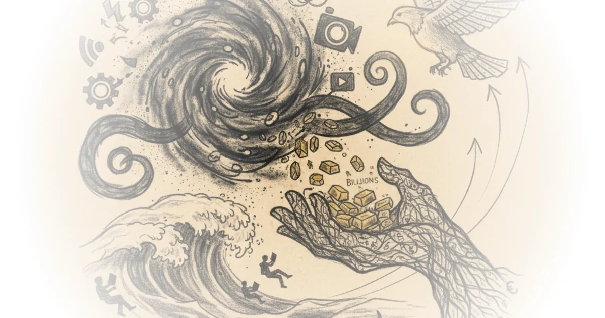
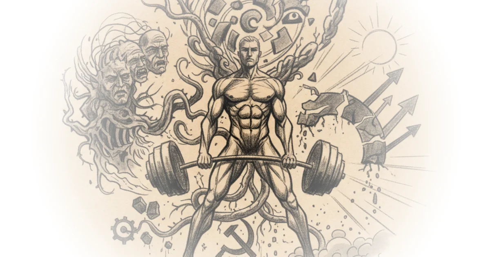
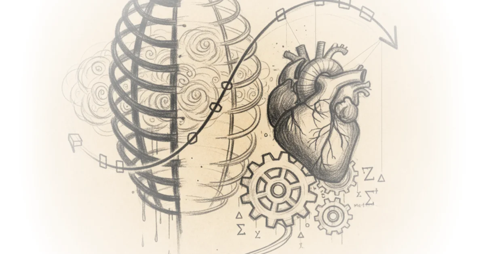
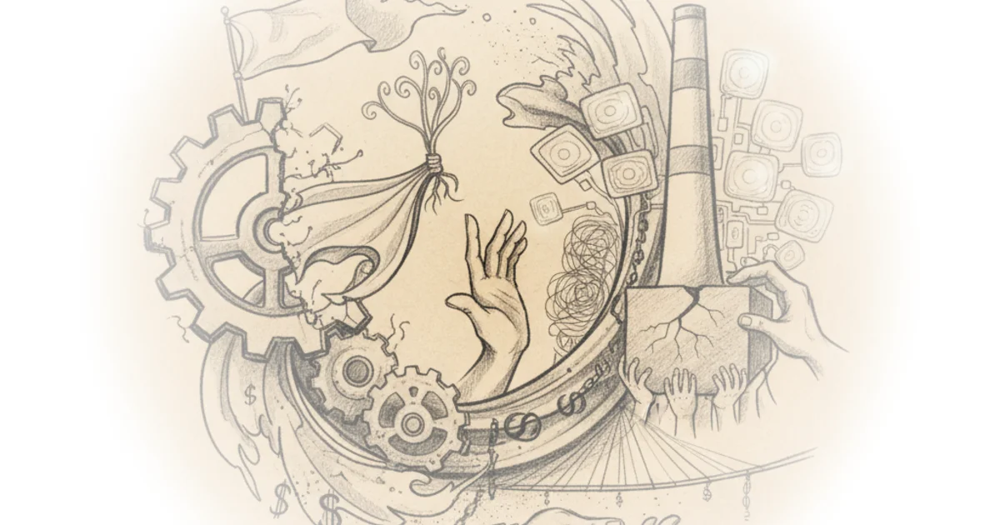
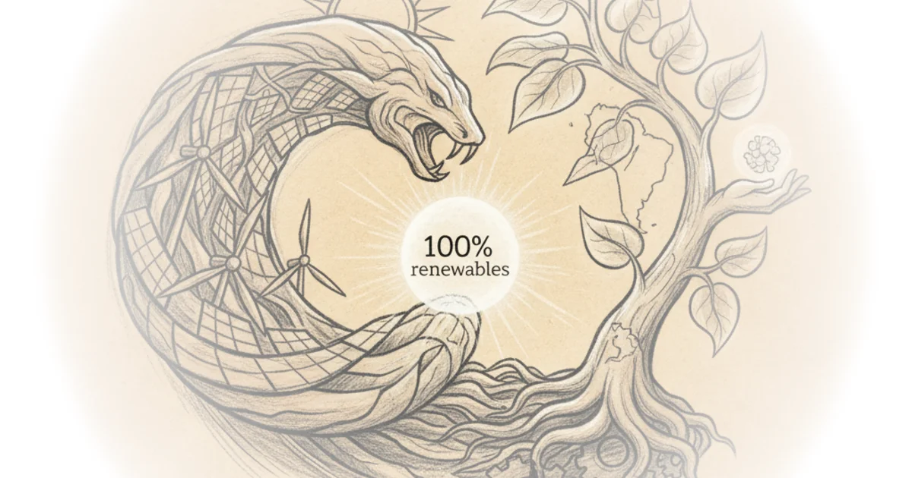
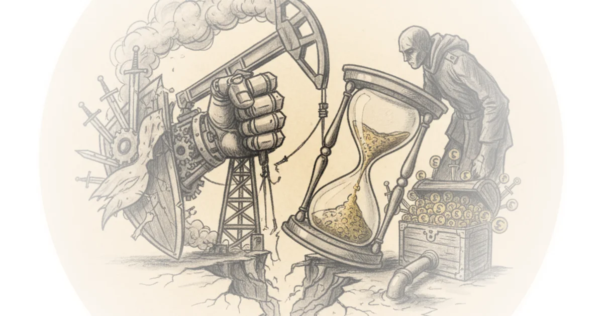
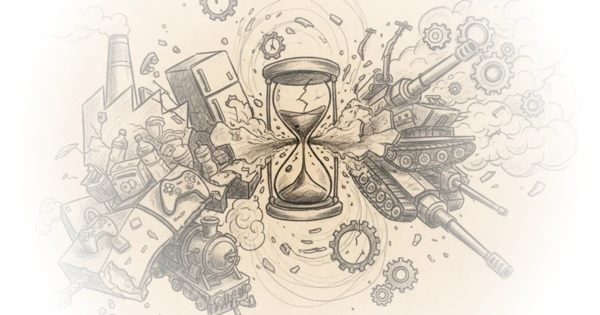
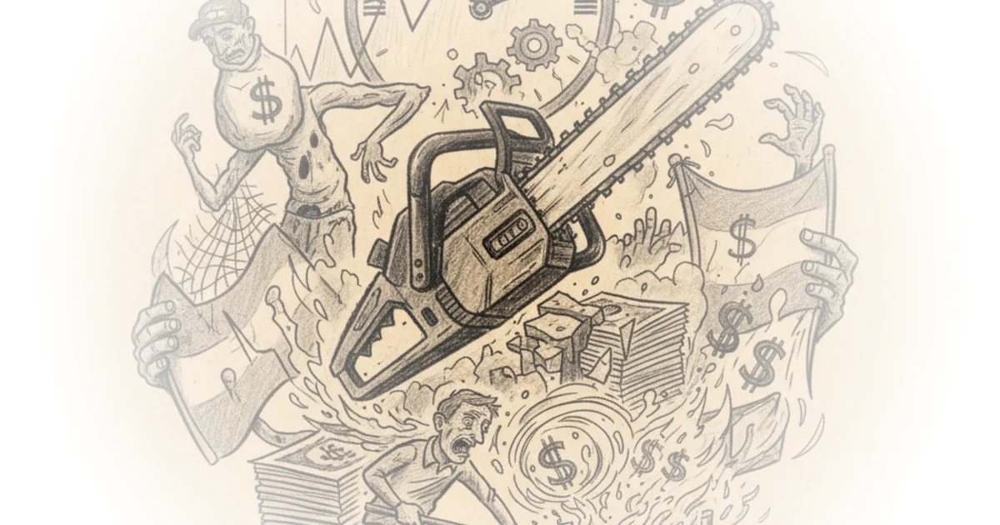

Must work suck so much? | Parts three & four: Subjugation and subjectification Mona Mona · Philosophy Publics ·Oct 21, 2025 · 1 min read · Economics
Amazon web services had a very bad day, Amazon's stock price did not Matt Stoller · ·Oct 21, 2025 · 12 min read · Economics 
Dr. Mike israetel: Seed oils, testosterone and capitalism Doom Scroll · Doom Scroll ·Oct 21, 2025 · 50 min read · Economics 
The anatomy of the least squares method, part two Tivadar Danka · The Palindrome ·Oct 20, 2025 · 19 min read · Economics 
Quadruped state of the market - unitree, Boston dynamics, anybotics, deep robotics, and the rising… Dylan Patel · SemiAnalysis ·Oct 20, 2025 · 24 min read · Economics
Monopoly round-up: Does the left have trouble with making things in America? Matt Stoller · ·Oct 19, 2025 · 17 min read · Economics 
Role of storage in AI, primer on nand flash, and deep-dive into qlc ssds Vikram Sekar · Vik's Newsletter ·Oct 19, 2025 · 13 min read · Economics
Can latin America win the race to 100% renewables? Dave Borlace · Just Have a Think ·Oct 19, 2025 · 11 min read · Economics 
Nexperia's long history, tangled present and uncertain future Babbage · The Chip Letter ·Oct 18, 2025 · 12 min read · Economics
Why Russia's war economy is stronger than you think Joeri Schasfoort · Money & Macro ·Oct 17, 2025 · 16 min read · Economics 
More on US pedestrian deaths Brian Potter · Construction Physics ·Oct 16, 2025 · 17 min read · Economics
On peter howitt's other work Brian Albrecht · Economic Forces ·Oct 16, 2025 · 14 min read · Economics
A practical roadmap to AI fluency for hardware designers Vikram Sekar · Vik's Newsletter ·Oct 15, 2025 · 11 min read · Economics
The art of protein design with AI Various · Works in Progress ·Oct 15, 2025 · 48 min read · Economics
An interview with mohamed awad about chiplets Various · Chipstrat ·Oct 15, 2025 · 22 min read · Economics
The anatomy of the least squares method, part one Tivadar Danka · The Palindrome ·Oct 13, 2025 · 14 min read · Economics
And the 2025 economics nobel goes to Brian Albrecht · Economic Forces ·Oct 13, 2025 · 12 min read · Economics
Mobilising for failure - the economic transition to war and how nations get it wrong Perun · Perun ·Oct 13, 2025 · 59 min read · Economics 
Monopoly round-up: Will the trade war pop the AI bubble? Matt Stoller · ·Oct 12, 2025 · 10 min read · Economics
The chainsaw stalls: Can milei cut through Argentina’s currency collapse? Patrick Boyle · Patrick Boyle ·Oct 11, 2025 · 13 min read · Economics 
AI profiteering is now indistinguishable from trolling Brian Merchant · ·Oct 10, 2025 · 10 min read · Economics